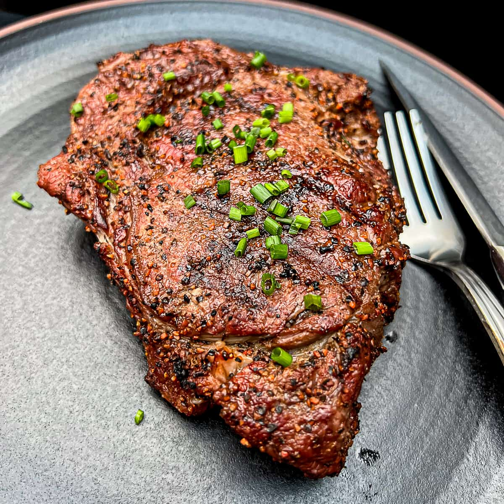

Ribeye Steak Recipe

Description
Great Japanese teriyaki-style marinated ribeye steak with a from-scratch teriyaki sauce.
With a prep time of 10 minutes and cook time of 15 with additional 2 hrs for a serving of 2.
Per Serving: 297 calories; protein 19.6g; carbohydrates 13.5g; fat 18.1g; cholesterol 60.3mg; sodium 991.6mg.
Ingredients
- 2 tablespoons soy sauce
- 2 tablespoons water2 tablespoons water
- 1 tablespoon white sugar
- 1 ½ teaspoons honey
- 1 ½ teaspoons Worcestershire sauce
- 1 ¼ teaspoons distilled white vinegar
- 1 teaspoon olive oil
- ¼ teaspoon onion powder
- ¼ teaspoon garlic powder
- ⅛ teaspoon ground ginger
- 2 (6 ounce) lean beef rib eye steaks
Steps:
-
Whisk together the soy sauce, water, sugar, honey, Worcestershire sauce, vinegar, olive oil, onion powder, garlic powder, and ground ginger in a large bowl. Pierce steaks several times with a fork. Marinate steaks in soy sauce mixture for at least 2 hours.
-
Whisk together the soy sauce, water, sugar, honey, Worcestershire sauce, vinegar, olive oil, onion powder, garlic powder, and ground ginger in a large bowl. Pierce steaks several times with a fork. Marinate steaks in soy sauce mixture for at least 2 hours.
- Serve and Enjoy!